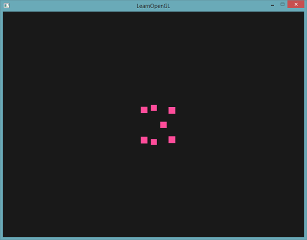
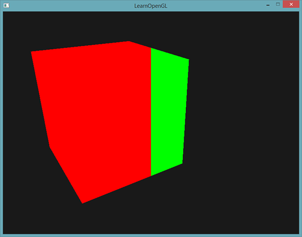
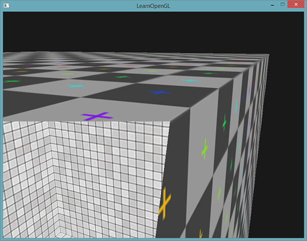
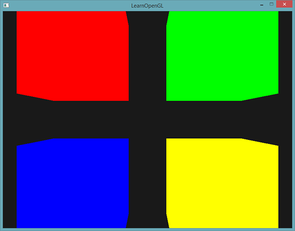

高级GLSL
| 原文 | Advanced GLSL |
|---|---|
| 作者 | JoeyDeVries |
| 翻译 | Krasjet |
| 校对 | AoZhang |
这一小节并不会向你展示非常先进非常酷的新特性，也不会对场景的视觉质量有显著的提高。但是，这一节会或多或少涉及GLSL的一些有趣的地方以及一些很棒的技巧，它们可能在今后会帮助到你。简单来说，它们就是在组合使用OpenGL和GLSL创建程序时的一些最好要知道的东西，和一些会让你生活更加轻松的特性。
我们将会讨论一些有趣的
GLSL的内建变量
着色器都是最简化的，如果需要当前着色器以外地方的数据的话，我们必须要将数据传进来。我们已经学会使用顶点属性、uniform和采样器来完成这一任务了。然而，除此之外，GLSL还定义了另外几个以gl_为前缀的变量，它们能提供给我们更多的方式来读取/写入数据。我们已经在前面教程中接触过其中的两个了：顶点着色器的输出向量gl_Position，和片段着色器的gl_FragCoord。
我们将会讨论几个有趣的GLSL内建输入和输出变量，并会解释它们能够怎样帮助你。注意，我们将不会讨论GLSL中存在的所有内建变量，如果你想知道所有的内建变量的话，请查看OpenGL的wiki。
顶点着色器变量
我们已经见过gl_Position了，它是顶点着色器的裁剪空间输出位置向量。如果你想在屏幕上显示任何东西，在顶点着色器中设置gl_Position是必须的步骤。这已经是它的全部功能了。
gl_PointSize
我们能够选用的其中一个图元是GL_POINTS，如果使用它的话，每一个顶点都是一个图元，都会被渲染为一个点。我们可以通过OpenGL的
GLSL定义了一个叫做gl_PointSize输出变量，它是一个
在顶点着色器中修改点大小的功能默认是禁用的，如果你需要启用它的话，你需要启用OpenGL的GL_PROGRAM_POINT_SIZE：
glEnable(GL_PROGRAM_POINT_SIZE);
一个简单的例子就是将点的大小设置为裁剪空间位置的z值，也就是顶点距观察者的距离。点的大小会随着观察者距顶点距离变远而增大。
void main()
{
gl_Position = projection * view * model * vec4(aPos, 1.0);
gl_PointSize = gl_Position.z;
}
结果就是，当我们远离这些点的时候，它们会变得更大：

你可以想到，对每个顶点使用不同的点大小，会在粒子生成之类的技术中很有意思。
gl_VertexID
gl_Position和gl_PointSize都是输出变量，因为它们的值是作为顶点着色器的输出被读取的。我们可以对它们进行写入，来改变结果。顶点着色器还为我们提供了一个有趣的输入变量，我们只能对它进行读取，它叫做gl_VertexID。
整型变量gl_VertexID储存了正在绘制顶点的当前ID。当（使用
片段着色器变量
在片段着色器中，我们也能访问到一些有趣的变量。GLSL提供给我们两个有趣的输入变量：gl_FragCoord和gl_FrontFacing。
gl_FragCoord
在讨论深度测试的时候，我们已经见过gl_FragCoord很多次了，因为gl_FragCoord的z分量等于对应片段的深度值。然而，我们也能使用它的x和y分量来实现一些有趣的效果。
gl_FragCoord的x和y分量是片段的窗口空间(Window-space)坐标，其原点为窗口的左下角。我们已经使用
通过利用片段着色器，我们可以根据片段的窗口坐标，计算出不同的颜色。gl_FragCoord的一个常见用处是用于对比不同片段计算的视觉输出效果，这在技术演示中可以经常看到。比如说，我们能够将屏幕分成两部分，在窗口的左侧渲染一种输出，在窗口的右侧渲染另一种输出。下面这个例子片段着色器会根据窗口坐标输出不同的颜色：
void main()
{
if(gl_FragCoord.x < 400)
FragColor = vec4(1.0, 0.0, 0.0, 1.0);
else
FragColor = vec4(0.0, 1.0, 0.0, 1.0);
}
因为窗口的宽度是800。当一个像素的x坐标小于400时，它一定在窗口的左侧，所以我们给它一个不同的颜色。

我们现在会计算出两个完全不同的片段着色器结果，并将它们显示在窗口的两侧。举例来说，你可以将它用于测试不同的光照技巧。
gl_FrontFacing
片段着色器另外一个很有意思的输入变量是gl_FrontFacing。在面剔除教程中，我们提到OpenGL能够根据顶点的环绕顺序来决定一个面是正向还是背向面。如果我们不（启用GL_FACE_CULL来）使用面剔除，那么gl_FrontFacing将会告诉我们当前片段是属于正向面的一部分还是背向面的一部分。举例来说，我们能够对正向面计算出不同的颜色。
gl_FrontFacing变量是一个true，否则就是false。比如说，我们可以这样子创建一个立方体，在内部和外部使用不同的纹理：
#version 330 core
out vec4 FragColor;
in vec2 TexCoords;
uniform sampler2D frontTexture;
uniform sampler2D backTexture;
void main()
{
if(gl_FrontFacing)
FragColor = texture(frontTexture, TexCoords);
else
FragColor = texture(backTexture, TexCoords);
}
如果我们往箱子里面看，就能看到使用的是不同的纹理。

注意，如果你开启了面剔除，你就看不到箱子内部的面了，所以现在再使用gl_FrontFacing就没有意义了。
gl_FragDepth
输入变量gl_FragCoord能让我们读取当前片段的窗口空间坐标，并获取它的深度值，但是它是一个
要想设置深度值，我们直接写入一个0.0到1.0之间的
gl_FragDepth = 0.0; // 这个片段现在的深度值为 0.0
如果着色器没有写入值到gl_FragDepth，它会自动取用gl_FragCoord.z的值。
然而，由我们自己设置深度值有一个很大的缺点，只要我们在片段着色器中对gl_FragDepth进行写入，OpenGL就会（像深度测试小节中讨论的那样）禁用所有的
在写入gl_FragDepth时，你就需要考虑到它所带来的性能影响。然而，从OpenGL 4.2起，我们仍可以对两者进行一定的调和，在片段着色器的顶部使用
layout (depth_<condition>) out float gl_FragDepth;
condition可以为下面的值：
| 条件 | 描述 |
|---|---|
any |
默认值。提前深度测试是禁用的，你会损失很多性能 |
greater |
你只能让深度值比gl_FragCoord.z更大 |
less |
你只能让深度值比gl_FragCoord.z更小 |
unchanged |
如果你要写入gl_FragDepth，你将只能写入gl_FragCoord.z的值 |
通过将深度条件设置为greater或者less，OpenGL就能假设你只会写入比当前片段深度值更大或者更小的值了。这样子的话，当深度值比片段的深度值要小的时候，OpenGL仍是能够进行提前深度测试的。
下面这个例子中，我们对片段的深度值进行了递增，但仍然也保留了一些提前深度测试：
#version 420 core // 注意GLSL的版本！
out vec4 FragColor;
layout (depth_greater) out float gl_FragDepth;
void main()
{
FragColor = vec4(1.0);
gl_FragDepth = gl_FragCoord.z + 0.1;
}
注意这个特性只在OpenGL 4.2版本或以上才提供。
接口块
到目前为止，每当我们希望从顶点着色器向片段着色器发送数据时，我们都声明了几个对应的输入/输出变量。将它们一个一个声明是着色器间发送数据最简单的方式了，但当程序变得更大时，你希望发送的可能就不只是几个变量了，它还可能包括数组和结构体。
为了帮助我们管理这些变量，GLSL为我们提供了一个叫做
#version 330 core
layout (location = 0) in vec3 aPos;
layout (location = 1) in vec2 aTexCoords;
uniform mat4 model;
uniform mat4 view;
uniform mat4 projection;
out VS_OUT
{
vec2 TexCoords;
} vs_out;
void main()
{
gl_Position = projection * view * model * vec4(aPos, 1.0);
vs_out.TexCoords = aTexCoords;
}
这次我们声明了一个叫做vs_out的接口块，它打包了我们希望发送到下一个着色器中的所有输出变量。这只是一个很简单的例子，但你可以想象一下，它能够帮助你管理着色器的输入和输出。当我们希望将着色器的输入或输出打包为数组时，它也会非常有用，我们将在下一节讨论几何着色器(Geometry Shader)时见到。
之后，我们还需要在下一个着色器，即片段着色器，中定义一个输入接口块。
#version 330 core
out vec4 FragColor;
in VS_OUT
{
vec2 TexCoords;
} fs_in;
uniform sampler2D texture;
void main()
{
FragColor = texture(texture, fs_in.TexCoords);
}
只要两个接口块的名字一样，它们对应的输入和输出将会匹配起来。这是帮助你管理代码的又一个有用特性，它在几何着色器这样穿插特定着色器阶段的场景下会很有用。
Uniform缓冲对象
我们已经使用OpenGL很长时间了，学会了一些很酷的技巧，但也遇到了一些很麻烦的地方。比如说，当使用多于一个的着色器时，尽管大部分的uniform变量都是相同的，我们还是需要不断地设置它们，所以为什么要这么麻烦地重复设置它们呢？
OpenGL为我们提供了一个叫做
因为Uniform缓冲对象仍是一个缓冲，我们可以使用
#version 330 core
layout (location = 0) in vec3 aPos;
layout (std140) uniform Matrices
{
mat4 projection;
mat4 view;
};
uniform mat4 model;
void main()
{
gl_Position = projection * view * model * vec4(aPos, 1.0);
}
在我们大多数的例子中，我们都会在每个渲染迭代中，对每个着色器设置projection和view Uniform矩阵。这是利用Uniform缓冲对象的一个非常完美的例子，因为现在我们只需要存储这些矩阵一次就可以了。
这里，我们声明了一个叫做Matrices的Uniform块，它储存了两个4x4矩阵。Uniform块中的变量可以直接访问，不需要加块名作为前缀。接下来，我们在OpenGL代码中将这些矩阵值存入缓冲中，每个声明了这个Uniform块的着色器都能够访问这些矩阵。
你现在可能会在想layout (std140)这个语句是什么意思。它的意思是说，当前定义的Uniform块对它的内容使用一个特定的内存布局。这个语句设置了
Uniform块布局
Uniform块的内容是储存在一个缓冲对象中的，它实际上只是一块预留内存。因为这块内存并不会保存它具体保存的是什么类型的数据，我们还需要告诉OpenGL内存的哪一部分对应着着色器中的哪一个uniform变量。
假设着色器中有以下的这个Uniform块：
layout (std140) uniform ExampleBlock
{
float value;
vec3 vector;
mat4 matrix;
float values[3];
bool boolean;
int integer;
};
我们需要知道的是每个变量的大小（字节）和（从块起始位置的）偏移量，来让我们能够按顺序将它们放进缓冲中。每个元素的大小都是在OpenGL中有清楚地声明的，而且直接对应C++数据类型，其中向量和矩阵都是大的float数组。OpenGL没有声明的是这些变量间的
默认情况下，GLSL会使用一个叫做
虽然共享布局给了我们很多节省空间的优化，但是我们需要查询每个uniform变量的偏移量，这会产生非常多的工作量。通常的做法是，不使用共享布局，而是使用
每个变量都有一个
布局规则的原文可以在OpenGL的Uniform缓冲规范这里找到，但我们将会在下面列出最常见的规则。GLSL中的每个变量，比如说N来表示。
| 类型 | 布局规则 |
|---|---|
| 标量，比如 |
每个标量的基准对齐量为N。 |
| 向量 | 2N或者4N。这意味着 |
| 标量或向量的数组 | 每个元素的基准对齐量与 |
| 矩阵 | 储存为列向量的数组，每个向量的基准对齐量与 |
| 结构体 | 等于所有元素根据规则计算后的大小，但会填充到 |
和OpenGL大多数的规范一样，使用例子就能更容易地理解。我们会使用之前引入的那个叫做ExampleBlock的Uniform块，并使用std140布局计算出每个成员的对齐偏移量：
layout (std140) uniform ExampleBlock
{
// 基准对齐量 // 对齐偏移量
float value; // 4 // 0
vec3 vector; // 16 // 16 (必须是16的倍数，所以 4->16)
mat4 matrix; // 16 // 32 (列 0)
// 16 // 48 (列 1)
// 16 // 64 (列 2)
// 16 // 80 (列 3)
float values[3]; // 16 // 96 (values[0])
// 16 // 112 (values[1])
// 16 // 128 (values[2])
bool boolean; // 4 // 144
int integer; // 4 // 148
};
作为练习，尝试去自己计算一下偏移量，并和表格进行对比。使用计算后的偏移量值，根据std140布局的规则，我们就能使用像是
通过在Uniform块定义之前添加layout (std140)语句，我们告诉OpenGL这个Uniform块使用的是std140布局。除此之外还可以选择两个布局，但它们都需要我们在填充缓冲之前先查询每个偏移量。我们已经见过shared布局了，剩下的一个布局是packed。当使用紧凑(Packed)布局时，是不能保证这个布局在每个程序中保持不变的（即非共享），因为它允许编译器去将uniform变量从Uniform块中优化掉，这在每个着色器中都可能是不同的。
使用Uniform缓冲
我们已经讨论了如何在着色器中定义Uniform块，并设定它们的内存布局了，但我们还没有讨论该如何使用它们。
首先，我们需要调用
unsigned int uboExampleBlock;
glGenBuffers(1, &uboExampleBlock);
glBindBuffer(GL_UNIFORM_BUFFER, uboExampleBlock);
glBufferData(GL_UNIFORM_BUFFER, 152, NULL, GL_STATIC_DRAW); // 分配152字节的内存
glBindBuffer(GL_UNIFORM_BUFFER, 0);
现在，每当我们需要对缓冲更新或者插入数据，我们都会绑定到uboExampleBlock，并使用
在OpenGL上下文中，定义了一些

你可以看到，我们可以绑定多个Uniform缓冲到不同的绑定点上。因为着色器A和着色器B都有一个链接到绑定点0的Uniform块，它们的Uniform块将会共享相同的uniform数据，uboMatrices，前提条件是两个着色器都定义了相同的Matrices Uniform块。
为了将Uniform块绑定到一个特定的绑定点中，我们需要调用
unsigned int lights_index = glGetUniformBlockIndex(shaderA.ID, "Lights");
glUniformBlockBinding(shaderA.ID, lights_index, 2);
注意我们需要对每个着色器重复这一步骤。
Important
从OpenGL 4.2版本起，你也可以添加一个布局标识符，显式地将Uniform块的绑定点储存在着色器中，这样就不用再调用
layout(std140, binding = 2) uniform Lights { ... };
接下来，我们还需要绑定Uniform缓冲对象到相同的绑定点上，这可以使用
glBindBufferBase(GL_UNIFORM_BUFFER, 2, uboExampleBlock);
// 或
glBindBufferRange(GL_UNIFORM_BUFFER, 2, uboExampleBlock, 0, 152);
现在，所有的东西都配置完毕了，我们可以开始向Uniform缓冲中添加数据了。只要我们需要，就可以使用
glBindBuffer(GL_UNIFORM_BUFFER, uboExampleBlock);
int b = true; // GLSL中的bool是4字节的，所以我们将它存为一个integer
glBufferSubData(GL_UNIFORM_BUFFER, 144, 4, &b);
glBindBuffer(GL_UNIFORM_BUFFER, 0);
同样的步骤也能应用到Uniform块中其它的uniform变量上，但需要使用不同的范围参数。
一个简单的例子
所以，我们来展示一个真正使用Uniform缓冲对象的例子。如果我们回头看看之前所有的代码例子，我们不断地在使用3个矩阵：投影、观察和模型矩阵。在所有的这些矩阵中，只有模型矩阵会频繁变动。如果我们有多个着色器使用了这同一组矩阵，那么使用Uniform缓冲对象可能会更好。
我们会将投影和模型矩阵存储到一个叫做Matrices的Uniform块中。我们不会将模型矩阵存在这里，因为模型矩阵在不同的着色器中会不断改变，所以使用Uniform缓冲对象并不会带来什么好处。
#version 330 core
layout (location = 0) in vec3 aPos;
layout (std140) uniform Matrices
{
mat4 projection;
mat4 view;
};
uniform mat4 model;
void main()
{
gl_Position = projection * view * model * vec4(aPos, 1.0);
}
这里没什么特别的，除了我们现在使用的是一个std140布局的Uniform块。我们将在例子程序中，显示4个立方体，每个立方体都是使用不同的着色器程序渲染的。这4个着色器程序将使用相同的顶点着色器，但使用的是不同的片段着色器，每个着色器会输出不同的颜色。
首先，我们将顶点着色器的Uniform块设置为绑定点0。注意我们需要对每个着色器都设置一遍。
unsigned int uniformBlockIndexRed = glGetUniformBlockIndex(shaderRed.ID, "Matrices");
unsigned int uniformBlockIndexGreen = glGetUniformBlockIndex(shaderGreen.ID, "Matrices");
unsigned int uniformBlockIndexBlue = glGetUniformBlockIndex(shaderBlue.ID, "Matrices");
unsigned int uniformBlockIndexYellow = glGetUniformBlockIndex(shaderYellow.ID, "Matrices");
glUniformBlockBinding(shaderRed.ID, uniformBlockIndexRed, 0);
glUniformBlockBinding(shaderGreen.ID, uniformBlockIndexGreen, 0);
glUniformBlockBinding(shaderBlue.ID, uniformBlockIndexBlue, 0);
glUniformBlockBinding(shaderYellow.ID, uniformBlockIndexYellow, 0);
接下来，我们创建Uniform缓冲对象本身，并将其绑定到绑定点0：
unsigned int uboMatrices
glGenBuffers(1, &uboMatrices);
glBindBuffer(GL_UNIFORM_BUFFER, uboMatrices);
glBufferData(GL_UNIFORM_BUFFER, 2 * sizeof(glm::mat4), NULL, GL_STATIC_DRAW);
glBindBuffer(GL_UNIFORM_BUFFER, 0);
glBindBufferRange(GL_UNIFORM_BUFFER, 0, uboMatrices, 0, 2 * sizeof(glm::mat4));
首先我们为缓冲分配了足够的内存，它等于
剩余的就是填充这个缓冲了。如果我们将投影矩阵的视野(Field of View)值保持不变（所以摄像机就没有缩放了），我们只需要将其在程序中定义一次——这也意味着我们只需要将它插入到缓冲中一次。因为我们已经为缓冲对象分配了足够的内存，我们可以使用
glm::mat4 projection = glm::perspective(glm::radians(45.0f), (float)width/(float)height, 0.1f, 100.0f);
glBindBuffer(GL_UNIFORM_BUFFER, uboMatrices);
glBufferSubData(GL_UNIFORM_BUFFER, 0, sizeof(glm::mat4), glm::value_ptr(projection));
glBindBuffer(GL_UNIFORM_BUFFER, 0);
这里我们将投影矩阵储存在Uniform缓冲的前半部分。在每次渲染迭代中绘制物体之前，我们会将观察矩阵更新到缓冲的后半部分：
glm::mat4 view = camera.GetViewMatrix();
glBindBuffer(GL_UNIFORM_BUFFER, uboMatrices);
glBufferSubData(GL_UNIFORM_BUFFER, sizeof(glm::mat4), sizeof(glm::mat4), glm::value_ptr(view));
glBindBuffer(GL_UNIFORM_BUFFER, 0);
Uniform缓冲对象的部分就结束了。每个包含了Matrices这个Uniform块的顶点着色器将会包含储存在uboMatrices中的数据。所以，如果我们现在要用4个不同的着色器绘制4个立方体，它们的投影和观察矩阵都会是一样的。
glBindVertexArray(cubeVAO);
shaderRed.use();
glm::mat4 model;
model = glm::translate(model, glm::vec3(-0.75f, 0.75f, 0.0f)); // 移动到左上角
shaderRed.setMat4("model", model);
glDrawArrays(GL_TRIANGLES, 0, 36);
// ... 绘制绿色立方体
// ... 绘制蓝色立方体
// ... 绘制黄色立方体
唯一需要设置的uniform只剩model uniform了。在像这样的场景中使用Uniform缓冲对象会让我们在每个着色器中都剩下一些uniform调用。最终的结果会是这样的：

因为修改了模型矩阵，每个立方体都移动到了窗口的一边，并且由于使用了不同的片段着色器，它们的颜色也不同。这只是一个很简单的情景，我们可能会需要使用Uniform缓冲对象，但任何大型的渲染程序都可能同时激活有上百个着色器程序，这时候Uniform缓冲对象的优势就会很大地体现出来了。
你可以在这里找到uniform例子程序的完整源代码。
Uniform缓冲对象比起独立的uniform有很多好处。第一，一次设置很多uniform会比一个一个设置多个uniform要快很多。第二，比起在多个着色器中修改同样的uniform，在Uniform缓冲中修改一次会更容易一些。最后一个好处可能不会立即显现，如果使用Uniform缓冲对象的话，你可以在着色器中使用更多的uniform。OpenGL限制了它能够处理的uniform数量，这可以通过GL_MAX_VERTEX_UNIFORM_COMPONENTS来查询。当使用Uniform缓冲对象时，最大的数量会更高。所以，当你达到了uniform的最大数量时（比如再做骨骼动画(Skeletal Animation)的时候），你总是可以选择使用Uniform缓冲对象。